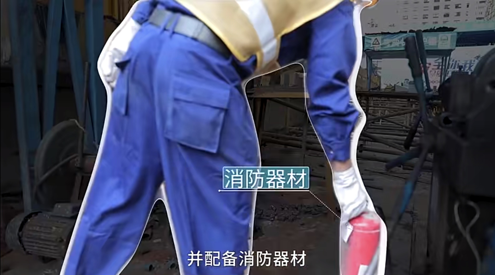
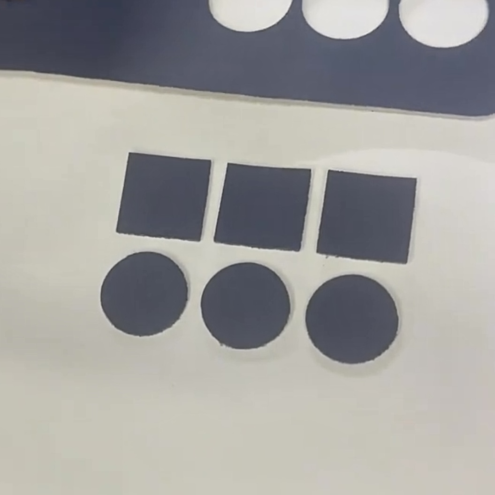
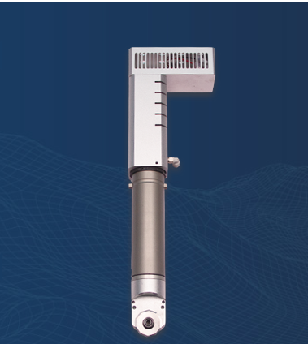
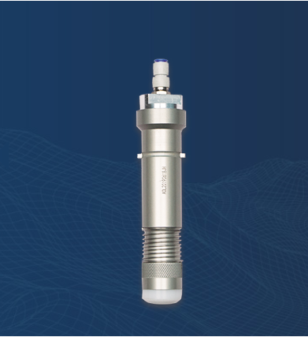
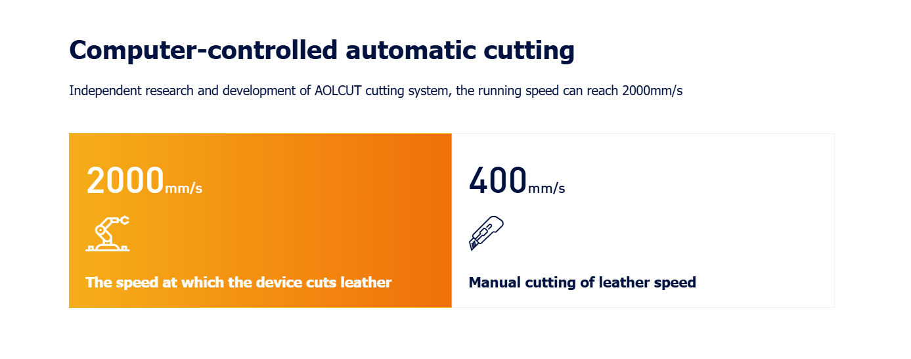
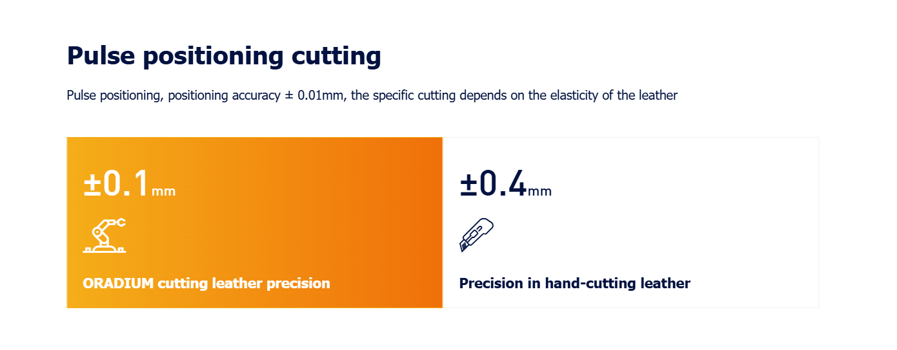
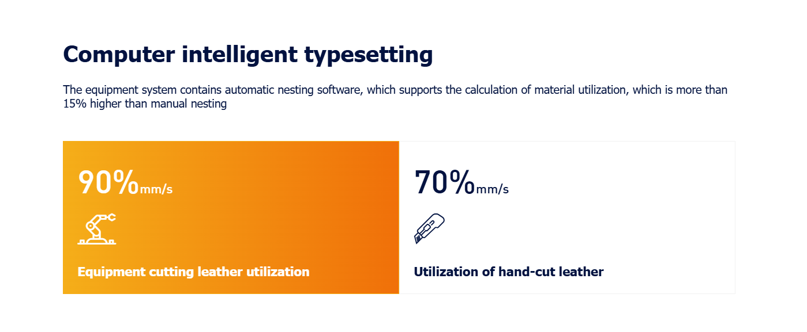
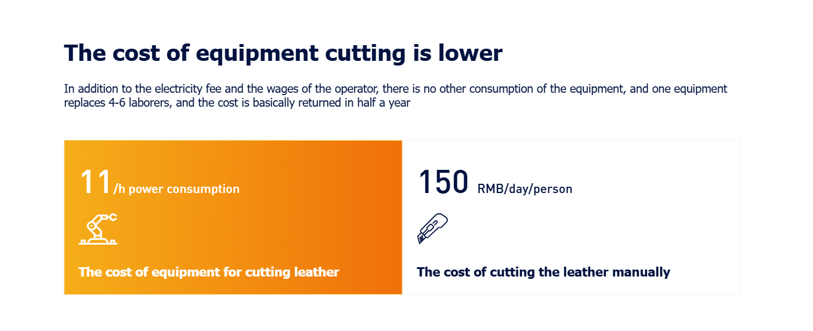
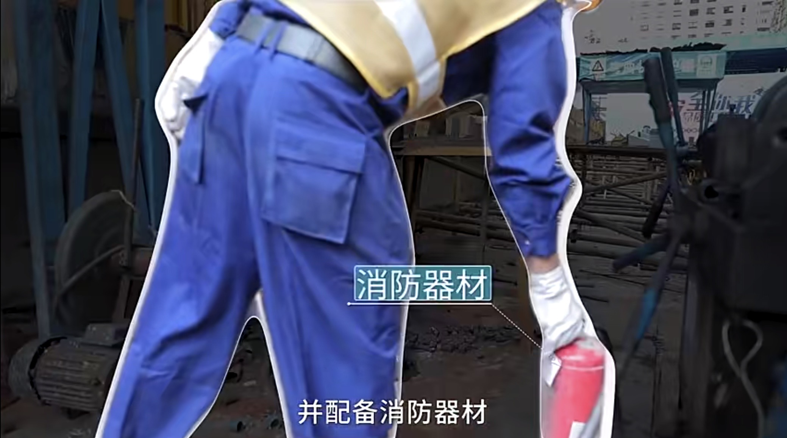

Laser cutting
Learn how to keep safety
1.Comply with safety operating procedures:
Strictly follow the general safety operating procedures for cutting machines.
Strictly follow the laser startup program to start the laser.
2.Operator training:
Operators must undergo professional training, be familiar with equipment structure and performance, and master knowledge related to operating systems.
3.Labor protection:
Wear labor protection equipment according to regulations, especially when working near the laser beam, and must wear protective goggles that comply with regulations.

There are many types of laser protective glasses, with different materials, different principles, and different applications.
Therefore, in order to provide effective protection against lasers, it is necessary to make a reasonable choice of laser protective glasses according to specific use requirements. When selecting protective glasses, the maximum laser output irradiance or maximum irradiance is first determined according to the maximum output power (or energy) of the laser used, beam diameter, pulse time and other parameters. Then, the minimum optical density required for the glasses is determined according to the maximum permissible irradiation (eye exposure limit) of the corresponding wavelength and irradiation time, and the appropriate protective glasses are selected accordingly.
4.Material identification:
Before determining whether a material can be irradiated or heated with laser, do not process it to avoid potential hazards such as smoke and steam.
5.Equipment operation:
When the equipment is in operation, operators are not allowed to leave their posts or entrust someone to be in charge without authorization. If it is necessary to leave, the machine should be shut down or the power switch should be turned off.
When abnormalities are found during the processing, the machine should be immediately shut down, and the fault should be promptly eliminated or reported to the supervisor.
Keep the laser, bed, and surrounding area clean, orderly, and free of oil stains, and stack workpieces, boards, and waste materials according to regulations.
6.Safe environment:
Place the fire extinguisher within easy reach; Turn off the laser or shutter when not processing.
Do not place paper, cloth, or other flammable materials near unprotected laser beams.

7.Gas cylinder usage:
When using gas cylinders, it is important to avoid damaging welding wires to prevent electric leakage accidents.
The use and transportation of gas cylinders should comply with the gas cylinder supervision regulations. Gas cylinders are prohibited from being exposed to sunlight or near heat sources. When opening the bottle valve, the operator must stand on the side of the bottle nozzle.
8.Equipment maintenance:
High voltage safety regulations must be followed during maintenance. Follow the regulations and procedures for maintenance every 40 hours of operation or every week, every 1000 hours of operation or every six months.
9.Power on inspection:
After starting up, the machine should be manually started at low speed in the X and Y directions to check and confirm if there are any abnormal situations.
10.Program input:
After inputting the new workpiece program, a trial run should be conducted and its operation should be checked.
11.Machine operation observation:
When working, pay attention to observing the operation of the machine tool to avoid accidents caused by the cutting machine leaving the effective travel range or collision between two machines.

Laser cutting machine cuts leather
Cutting effect:
The laser cutting machine has a very good cutting effect on leather, which can achieve high cutting accuracy, fast speed, accurate cutting size, and smooth cutting edges. This is an advantage that traditional mechanical cutting machines cannot achieve.
Parameter settings:
Before laser cutting, it is necessary to set corresponding parameters based on the thickness, hardness, color and other properties of the leather material. These parameters include laser power, laser frequency, scanning speed, and focal length.
Laser power: The laser power needs to be adjusted according to the thickness and hardness of the leather material. Generally speaking, thinner and softer leather materials require lower laser power, while thicker and harder leather materials require higher laser power.
Laser frequency: The frequency is closely related to the quality and speed of drilling. Generally speaking, a frequency between 5000Hz and 10000Hz is most suitable.
Scanning speed: The faster the scanning speed, the faster the drilling speed, but it may also affect the drilling quality. The scanning speed needs to be set and adjusted according to the characteristics of the leather material.
Focal length: Focal length refers to the distance between the laser focal point and the leather surface. Laser cutting machine equipment usually has an automatic focusing function, which can automatically adjust the focal length according to the thickness of the leather material.

Laser cutting machine for cutting ceramics
The principle of laser cutting ceramics
The laser cutting machine utilizes the thermal energy of the laser beam to achieve cutting. When the laser beam is irradiated on the surface of ceramics, it releases energy to melt and evaporate the ceramics, thereby achieving the purpose of cutting and carving.
The advantages of laser cutting ceramics
Non contact machining: Laser cutting is a non-contact machining method that does not generate stress and causes minimal damage to ceramic materials.
High precision: The laser spot is small and can achieve high-precision cutting, meeting the precision requirements of ceramic processing.
Fast speed: Laser cutting is fast and can significantly improve production efficiency.
High degree of automation: Laser cutting equipment usually uses computerized digital control technology (CNC) devices, which can easily receive cutting data from CAD workstations and achieve automated production.

CNC Manufacture
Learn how to keep safety
1. General Safety Considerations
Wear Proper Protective Gear:
Wear safety helmets, safety glasses, and other protective equipment.
Avoid wearing loose clothing or long hair that could get caught in the machine.
Do Not Operate with Gloves:
Operating CNC machines with gloves is strictly prohibited to prevent accidents.
Keep the Workspace Clear:
Do not place obstacles around the machine to ensure sufficient workspace.
Remove debris and clutter to maintain a clean and organized environment.
Coordinate Teamwork:
When working with two or more people, ensure proper coordination and communication.
Do Not Use Compressed Air for Cleaning:
Compressed air should not be used to clean the machine, electrical cabinets, or NC units.
Strictly Follow Operating Procedures:
Any violation of operating procedures will be subject to disciplinary action.
2.Pre-Operation Preparations
Check Lubrication System:
Ensure the lubrication system is functioning properly before starting the machine.
If the machine has not been used for a long time, manually lubricate the parts.
Inspect Tools and Accessories:
Use tools and accessories that are compatible with the machine specifications.
Replace worn-out or damaged tools and accessories promptly.
Close Safety Guards:
Ensure all safety guards and doors are closed securely before operating the machine.
3. Safety During Operation
Avoid Direct Contact:
Do not touch the cutting tools, workpiece, or moving parts of the machine.
Use tools to remove debris and chips from the machine.
Monitor Machine Status:
Regularly check the temperature and sound of the spindle to identify any abnormalities.
Stay alert and do not leave the machine unattended during operation.
Do Not Modify Parameters:
Do not change the machine's parameters or settings without proper authorization.
Handle Emergencies:
In case of emergencies, immediately press the emergency stop button to halt the machine.
Program Execution:
Simulate the program graphically before running it on the machine.
Ensure the cutting tools are retracted to a safe distance before starting the machining process.
By strictly adhering to these safety measures, operators can significantly reduce the risk of accidents and ensure safe and efficient CNC operation.
Type of CNC machine
Leather cutting machine is computer controlled blade cutting, cutting no coke edge, no black edge, smokeless and tasteless, leather equipment support automatic loading and unloading, leather equipment has intelligent extraction contour and defect system, automatic typesetting system, compared with manual typesetting can save 15% of the material cost, leather cutting machine is widely used in leather sofa, leather clothing, shoes, leather bags and other industries

 视频链接
视频链接
Machine advantages
No need for drawing plates, one-click cutting of data import
Automatic nesting saves more than 15% of materials
The pulse positioning accuracy ± 0.01mm
The running speed of the servo motor is 2000mm/s
Streamlined operation, replacing 4-6 laborers
Intelligently extract the contours of the leather and avoid imperfections
The blade cuts smokeless, odorless, and non-burnt edges
The operation is simple, and ordinary workers can work in two hours
The process is controllable, and the cutting data can be checked
Support customized models, free cutting solutions
Introduction to knives
Vibrating knives
The motor drives the blade to vibrate up and down at high frequency to cut the material, which is very suitable for cutting medium-density materials, and can be used for cutting most flexible materials with a wide variety of blades.
It is suitable for cutting leather materials such as leather, imitation leather, cow tendon leather, PU leather, sheepskin, leather, cowhide and so on

Round knives
The motor drives the blade to rotate the cutting material at high speed, and the cutting edge is free of hanging wires and burrs, and the round blade can be assembled, which is especially suitable for cutting all kinds of woven materials.
This knife is suitable for cutting fur, fur and fur, fur and other materials, cutting does not hurt the hair, and it is recommended to configure a vibrating knife for cutting leather

Pneumatic knives
Reciprocating cutting is achieved by controlling the gas, and the kinetic energy is larger, and the maximum thickness can be cut 100mm
This machine is suitable for multi-layer leather cutting, the leather needs to identify imperfections and contours, and it is not possible to achieve multi-layer cutting, so it is recommended to use a vibrating knife for cutting

Energy efficiency comparison
Cutting speed

Cutting accuracy

Material Utilization

Cutting costs

4.Material identification:
Before determining whether a material can be irradiated or heated with laser, do not process it to avoid potential hazards such as smoke and steam.
5.Equipment operation:
When the equipment is in operation, operators are not allowed to leave their posts or entrust someone to be in charge without authorization. If it is necessary to leave, the machine should be shut down or the power switch should be turned off.
When abnormalities are found during the processing, the machine should be immediately shut down, and the fault should be promptly eliminated or reported to the supervisor.
Keep the laser, bed, and surrounding area clean, orderly, and free of oil stains, and stack workpieces, boards, and waste materials according to regulations.
6.Safe environment:
Place the fire extinguisher within easy reach; Turn off the laser or shutter when not processing.
Do not place paper, cloth, or other flammable materials near unprotected laser beams. 
7.Gas cylinder usage:
When using gas cylinders, it is important to avoid damaging welding wires to prevent electric leakage accidents.
The use and transportation of gas cylinders should comply with the gas cylinder supervision regulations. Gas cylinders are prohibited from being exposed to sunlight or near heat sources. When opening the bottle valve, the operator must stand on the side of the bottle nozzle.
8.Equipment maintenance:
High voltage safety regulations must be followed during maintenance. Follow the regulations and procedures for maintenance every 40 hours of operation or every week, every 1000 hours of operation or every six months.
9.Power on inspection:
After starting up, the machine should be manually started at low speed in the X and Y directions to check and confirm if there are any abnormal situations.
10.Program input:
After inputting the new workpiece program, a trial run should be conducted and its operation should be checked.
11.Machine operation observation:
When working, pay attention to observing the operation of the machine tool to avoid accidents caused by the cutting machine leaving the effective travel range or collision between two machines.
The laser cutting machine has a very good cutting effect on leather, which can achieve high cutting accuracy, fast speed, accurate cutting size, and smooth cutting edges. This is an advantage that traditional mechanical cutting machines cannot achieve.
Parameter settings:
Before laser cutting, it is necessary to set corresponding parameters based on the thickness, hardness, color and other properties of the leather material. These parameters include laser power, laser frequency, scanning speed, and focal length.
Laser power: The laser power needs to be adjusted according to the thickness and hardness of the leather material. Generally speaking, thinner and softer leather materials require lower laser power, while thicker and harder leather materials require higher laser power.
Laser frequency: The frequency is closely related to the quality and speed of drilling. Generally speaking, a frequency between 5000Hz and 10000Hz is most suitable.
Scanning speed: The faster the scanning speed, the faster the drilling speed, but it may also affect the drilling quality. The scanning speed needs to be set and adjusted according to the characteristics of the leather material.
Focal length: Focal length refers to the distance between the laser focal point and the leather surface. Laser cutting machine equipment usually has an automatic focusing function, which can automatically adjust the focal length according to the thickness of the leather material.
The principle of laser cutting ceramics
The laser cutting machine utilizes the thermal energy of the laser beam to achieve cutting. When the laser beam is irradiated on the surface of ceramics, it releases energy to melt and evaporate the ceramics, thereby achieving the purpose of cutting and carving.
The advantages of laser cutting ceramics
Non contact machining: Laser cutting is a non-contact machining method that does not generate stress and causes minimal damage to ceramic materials.
High precision: The laser spot is small and can achieve high-precision cutting, meeting the precision requirements of ceramic processing.
Fast speed: Laser cutting is fast and can significantly improve production efficiency.
High degree of automation: Laser cutting equipment usually uses computerized digital control technology (CNC) devices, which can easily receive cutting data from CAD workstations and achieve automated production.
1. General Safety Considerations
Wear Proper Protective Gear: Wear safety helmets, safety glasses, and other protective equipment. Avoid wearing loose clothing or long hair that could get caught in the machine.
Do Not Operate with Gloves: Operating CNC machines with gloves is strictly prohibited to prevent accidents.
Keep the Workspace Clear: Do not place obstacles around the machine to ensure sufficient workspace. Remove debris and clutter to maintain a clean and organized environment.
Coordinate Teamwork: When working with two or more people, ensure proper coordination and communication.
Do Not Use Compressed Air for Cleaning: Compressed air should not be used to clean the machine, electrical cabinets, or NC units.
Strictly Follow Operating Procedures: Any violation of operating procedures will be subject to disciplinary action.
2.Pre-Operation Preparations
Check Lubrication System: Ensure the lubrication system is functioning properly before starting the machine. If the machine has not been used for a long time, manually lubricate the parts.
Inspect Tools and Accessories: Use tools and accessories that are compatible with the machine specifications. Replace worn-out or damaged tools and accessories promptly.
Close Safety Guards: Ensure all safety guards and doors are closed securely before operating the machine.
3. Safety During Operation
Avoid Direct Contact: Do not touch the cutting tools, workpiece, or moving parts of the machine. Use tools to remove debris and chips from the machine.
Monitor Machine Status: Regularly check the temperature and sound of the spindle to identify any abnormalities. Stay alert and do not leave the machine unattended during operation.
Do Not Modify Parameters: Do not change the machine's parameters or settings without proper authorization.
Handle Emergencies: In case of emergencies, immediately press the emergency stop button to halt the machine.
Program Execution: Simulate the program graphically before running it on the machine. Ensure the cutting tools are retracted to a safe distance before starting the machining process. By strictly adhering to these safety measures, operators can significantly reduce the risk of accidents and ensure safe and efficient CNC operation.
视频链接
Machine advantages
No need for drawing plates, one-click cutting of data import
Automatic nesting saves more than 15% of materials
The pulse positioning accuracy ± 0.01mm
The running speed of the servo motor is 2000mm/s
Streamlined operation, replacing 4-6 laborers
Intelligently extract the contours of the leather and avoid imperfections
The blade cuts smokeless, odorless, and non-burnt edges
The operation is simple, and ordinary workers can work in two hours
The process is controllable, and the cutting data can be checked
Support customized models, free cutting solutions
Introduction to knives
Vibrating knives
The motor drives the blade to vibrate up and down at high frequency to cut the material, which is very suitable for cutting medium-density materials, and can be used for cutting most flexible materials with a wide variety of blades.
It is suitable for cutting leather materials such as leather, imitation leather, cow tendon leather, PU leather, sheepskin, leather, cowhide and so on